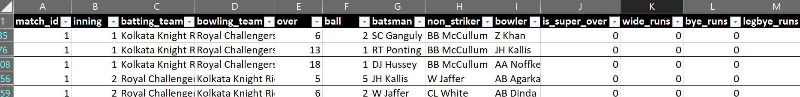

Analysis of First 5 IPL matches.
Overview:
I have a limited dataset of first 5 IPL matches. The .csv file consists of the following columns: 'match_id', 'inning', 'batting_team', 'bowling_team', 'over', 'ball', 'batsman', 'non_striker', 'bowler', 'is_super_over', 'wide_runs', 'bye_runs', 'legbye_runs', 'noball_runs', 'penalty_runs', 'batsman_runs', 'extra_runs', 'total_runs', 'player_dismissed' 'dismissal_kind' & 'fielder'

Source & Tool used:
Data Source:
Github Public Repo
Tool used: MS-Excel (Pivot table & some other functions)
Analysis:
- Total Matches - 5
- Total Wickets - 47
- Top 5 runs Scorers ((sorted by average runs per match))
- Top 5 wicker takers (sorted by average wickets per match)
- Top 5 bowlers who has given extra runs
- Total number of No-Balls - 3
There were total 5 matches played as the dataset itself contains only data of 5 matches. Used Max(match_id) to determine total matches.
Total 47 wickets were down in 10 innings (each match consists of 2 innings). Those 47 wickets are distributed in different categories, such as : Caught, Bowled, Runout etc.
Total runs includes the runs made by batsman in all matches (2 teams played two matches). Average runs represents the total runs divided by number of matches played. In this case, Each batsman played only 1 match, hence both columns are equal.
Total wickets includes the wickets taken by bowler in all matches (2 teams played two matches). Average wickets represents the total wickets divided by number of matches played. In this case, Z Khan & AB Dinda played 2 matches.
The Extra runs includes wide,byes etc. The column 'total_extra_runs' is the sum of extra sums given in all matches played by bowler & column 'average_extra_runs' is 'total_extra_runs' divided by no.of matches played.
There were 3 No-Balls bowled in 5 matches and 2 out of 3 no-balls were bowled in the same match (match no. 5)